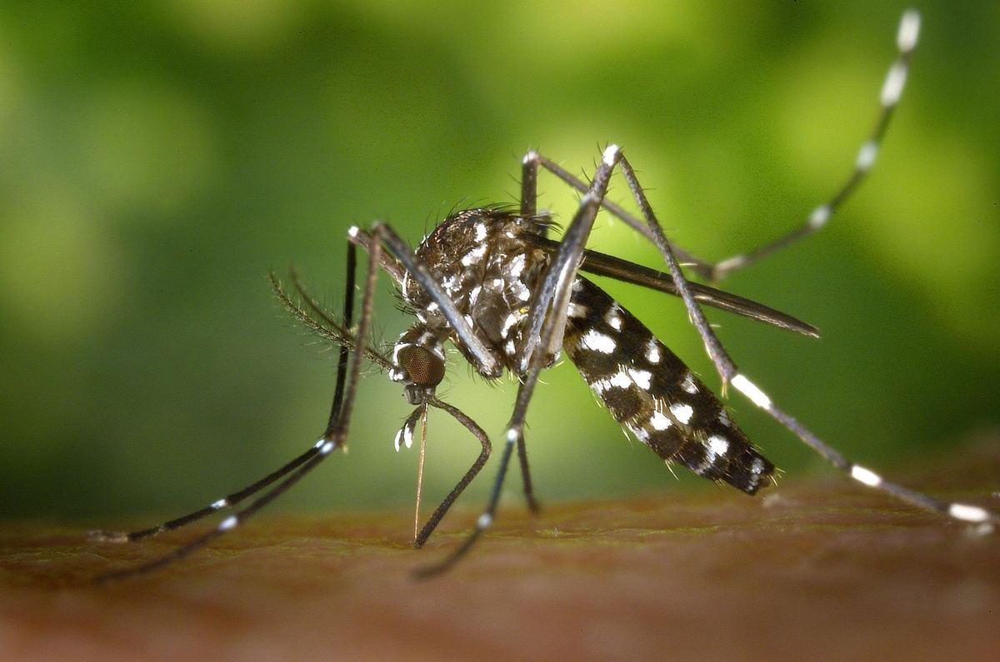

Moustiques en Corse : Solutions Professionnelles & Conseils Particuliers
Le moustique tigre est aujourd'hui implanté sur l'ensemble du territoire corse. Dezinsect Corse traite les gîtes larvaires et intervient en démoustication pour les professionnels comme pour les particuliers, avec des conseils pratiques pour limiter les piqûres au quotidien.

Espèces présentes & risques en Corse
Moustique tigre (Aedes albopictus)
Implanté sur toute la Corse : comme sur l'ensemble du littoral méditerranéen, il est aujourd'hui considéré comme installé de façon durable.
Pique le jour : surtout tôt le matin et en fin d'après-midi, contrairement au moustique commun.
Se reconnaît à ses rayures noires et blanches et à sa petite taille.
Moustique commun (Culex)
Pique la nuit : nuisance principale dans les chambres et pièces à vivre à la tombée du jour.
Se reproduit dans toute eau stagnante : bassins, gouttières bouchées, réserves d'eau non couvertes.
Présent toute l'année dans les zones humides et urbaines de Corse, avec un pic en période chaude.
Surveillance & gîtes larvaires
Surveillance renforcée : active chaque année du 1er mai au 30 novembre sur le territoire corse.
Gîtes larvaires : coupelles, gouttières, jouets, bâches — quelques millilitres d'eau stagnante suffisent à la ponte.
Signalement citoyen : possible sur le portail officiel de l'ANSES en cas de forte présence.
Plus de 40 espèces en Corse, mais une seule pose vraiment problème
L'Agence régionale de santé de Corse recense plus de 40 espèces de moustiques sur l'île. Sur ce total, cinq à six seulement sont susceptibles de transmettre des maladies, et l'immense majorité des autres ne pique jamais l'homme ou reste cantonnée à des milieux naturels que personne ne fréquente. Autrement dit : quand un moustique vous gêne chez vous, il y a de fortes chances qu'il s'agisse toujours des deux mêmes.
Les espèces sous surveillance
Aedes albopictus, le moustique tigre, vecteur potentiel de la dengue, du chikungunya et du Zika. C'est celui qui concentre l'attention des autorités.
Les anophèles, vecteurs historiques du paludisme. La maladie a disparu de Corse, mais la présence du moustique justifie une vigilance permanente.
Les Culex, vecteurs potentiels du virus West Nile, dit fièvre du Nil occidental.
Les autres genres présents
Culiseta, Coquillettidia, Orthopodomyia, Uranotaenia : autant de genres recensés en Corse comme dans le reste de la France métropolitaine.
Sans enjeu sanitaire connu pour l'homme : beaucoup piquent exclusivement les oiseaux ou les amphibiens.
La vection est l'exception, pas la règle : la grande majorité des moustiques ne transmet aucun pathogène humain.
Pourquoi identifier l'espèce change tout
Le gîte n'est pas le même : le tigre pond dans quelques millilitres d'eau chez vous, les moustiques de zones humides se développent dans des marais parfois distants de plusieurs kilomètres.
Le traitement diffère : traiter votre jardin ne changera rien si la nuisance vient d'un étang voisin.
C'est la première étape de toute intervention sérieuse : sans identification, on traite à l'aveugle.
Le moustique tigre : ce qui le rend si difficile à déloger
Implanté en Corse depuis 2006, Aedes albopictus est aujourd'hui considéré comme installé de façon définitive et irréversible. L'île fait partie des tout premiers territoires colonisés de France : la Haute-Corse a été déclarée colonisée dès 2006, la Corse-du-Sud l'année suivante, et la quasi-totalité des communes est aujourd'hui concernée. Sa réussite tient à trois particularités qui, ensemble, rendent la lutte classique inopérante.
Il se reproduit chez vous, pas ailleurs
Quelques millilitres suffisent : coupelle de pot, gouttière bouchée, jouet oublié, bâche plissée, seau retourné de travers.
Il ne vole quasiment pas : moins de 150 mètres au cours de sa vie entière. Le moustique qui vous pique est né chez vous ou chez votre voisin immédiat.
Conséquence directe : supprimer les gîtes larvaires de votre terrain a un effet immédiat et mesurable, ce qui n'est vrai d'aucune autre espèce.
Il pique le jour
Deux pics d'activité : tôt le matin et en fin d'après-midi, quand on est justement dehors.
Moustiquaires et diffuseurs de nuit sont inutiles contre lui : ils protègent d'une espèce qui n'est pas celle qui vous pique.
Il pique en extérieur : terrasses, jardins, abords de piscine — là où se joue la vie estivale.
Ses œufs résistent à la sécheresse
Pondus à sec, sur les parois d'un récipient au-dessus du niveau de l'eau, ils attendent la prochaine pluie.
Ils survivent plusieurs mois et éclosent dès remise en eau : vider un récipient sans le brosser ne suffit pas.
C'est pourquoi il revient chaque année au même endroit, même après un hiver rigoureux.
Une conséquence pratique découle de tout cela : les insecticides en bombe n'ont aucun effet durable sur le moustique tigre. Ils tuent quelques adultes présents au moment de la pulvérisation, qui sont remplacés en quelques jours par les larves déjà en développement. Bougies à la citronnelle, bracelets et appareils à ultrasons n'ont, eux, jamais démontré d'efficacité. La seule stratégie qui fonctionne combine la suppression méthodique des gîtes larvaires, un traitement larvicide sur les points d'eau qu'on ne peut pas supprimer, et le piégeage ciblé des femelles.
La saison de surveillance renforcée court du 1er mai au 30 novembre. Si vous repérez un moustique tigre chez vous, vous pouvez le signaler sur le portail de l'ANSES : ces signalements citoyens alimentent la carte officielle de colonisation.
Nos solutions pour les professionnels
Action préventive
Granulés larvicides sur points d'eau
Épandage d'un biocide larvicide sous forme de granulés dans les points d'eau stagnante identifiés lors du diagnostic (regards, avaloirs, bassins, réserves) pour bloquer le développement des larves avant l'apparition des moustiques adultes.
Action ciblée
Pulvérisation biocide adulticide
Pulvérisation professionnelle sur la végétation basse et les zones de repos des moustiques adultes, en amont d'un évènement ou d'une ouverture de saison, pour réduire rapidement la pression de piqûres sur un terrain ou une terrasse.
Complément sans biocide
Pièges de capture biomimétiques
En complément des traitements biocides, installation de pièges extérieurs qui imitent les signaux attirant les moustiques femelles (chaleur, CO₂, attractif olfactif) pour les capturer avant la piqûre, sans diffusion de produit sur les zones de vie — utile près des terrasses, piscines ou aires de jeux.
Complément physique
Barrières & pièges mécaniques
Moustiquaires techniques sur ouvertures et terrasses couvertes, associées si besoin à des pièges de capture par attraction lumineuse ou glu dans les zones de passage, pour réduire la pression sans traitement chimique supplémentaire.
Suivi mai–novembre
Contrats d'entretien saisonniers
Pour hôtels, campings, restaurants et copropriétés : passages réguliers sur la période à risque, combinant granulés, pulvérisation et dispositifs complémentaires selon la configuration du site.
L'efficacité d'un piège ou d'une barrière dépend du positionnement, de la densité de moustiques et de la suppression préalable des gîtes larvaires : ces dispositifs viennent en complément d'un traitement biocide, pas en remplacement.
Nos conseils pour les particuliers
Supprimer les eaux stagnantes
Videz coupelles, arrosoirs, jouets et gouttières tous les 5 jours.
Rangez ou retournez les bâches et récipients qui peuvent retenir l'eau de pluie.
Couvrez les réserves d'eau (citernes, bidons) avec une moustiquaire ou un couvercle hermétique.
Se protéger au quotidien
Utilisez un répulsif cutané adapté, surtout tôt le matin et en fin de journée.
Installez des moustiquaires aux fenêtres et autour des lits si besoin.
Privilégiez des vêtements longs et clairs lors des activités extérieures aux heures sensibles.
Quand faire appel à un professionnel
Nuisance persistante malgré l'élimination des points d'eau visibles.
Jardin, piscine ou terrain difficile à inspecter seul.
Évènement (mariage, réception) où une réduction rapide de la pression de piqûres est nécessaire.
Déroulé d'une intervention
1
Diagnostic sur place
Repérage des points d'eau stagnante et des zones de repos des moustiques sur le terrain ou l'établissement.
2
Devis & choix du traitement
Devis gratuit précisant l'intervention adaptée : traitement ponctuel, larvicide, adulticide ou contrat saisonnier.
3
Application du traitement
Traitement biocide professionnel avec équipement adapté, en respectant les délais de rentrée sur les zones traitées.
4
Suivi saisonnier
Conseils pour limiter la réapparition des gîtes larvaires et, pour les professionnels, passages réguliers sur la période à risque (mai–novembre).
Foire aux questions — Moustiques
Le moustique tigre est-il présent partout en Corse ?
Oui. Il est aujourd'hui considéré comme implanté sur l'ensemble du territoire corse, comme sur tout le littoral méditerranéen français. Une surveillance renforcée est active chaque année du 1er mai au 30 novembre.
Combien d'espèces de moustiques existe-t-il en Corse ?
L'Agence régionale de santé de Corse recense plus de 40 espèces sur l'île, réparties entre plusieurs genres : Aedes, Anopheles, Culex, Culiseta, Coquillettidia, Orthopodomyia et Uranotaenia. Cinq à six seulement sont susceptibles de transmettre des maladies, et beaucoup des autres ne piquent jamais l'homme. Dans la pratique, la nuisance domestique vient presque toujours du moustique tigre le jour et du moustique commun la nuit.
Le moustique japonais ou le moustique coréen sont-ils présents en Corse ?
Non. Aedes japonicus, le moustique japonais, est établi dans le nord-est et le centre-est de la France — Grand-Est, Bourgogne-Franche-Comté, Auvergne-Rhône-Alpes — et privilégie les climats tempérés. Aedes koreicus, le moustique coréen, n'a été détecté en France que dans quelques communes de Saône-et-Loire et de Côte-d'Or. Aucune des deux espèces n'est signalée en Corse à ce jour. En Corse, l'espèce invasive à surveiller reste le moustique tigre.
Quelle différence entre moustique tigre et moustique commun ?
Le moustique tigre pique surtout le jour, tôt le matin et en fin d'après-midi, et se reconnaît à ses rayures noires et blanches. Le moustique commun (Culex) pique principalement la nuit. Les deux se reproduisent dans l'eau stagnante, mais le moustique tigre se contente de très petites quantités d'eau.
Le traitement anti-moustiques est-il dangereux pour les enfants et animaux ?
Dezinsect Corse utilise des produits biocides professionnels homologués, appliqués par un technicien certifié Certibiocide selon les dosages et délais de rentrée réglementaires, avec des consignes précises communiquées avant et après le traitement.
À quelle fréquence faut-il traiter contre les moustiques en Corse ?
La période à risque s'étend de mai à novembre. Selon la configuration du terrain, un traitement ponctuel avant un évènement ou un contrat d'entretien avec plusieurs passages saisonniers peuvent être proposés.
Intervenez-vous pour les professionnels (hôtels, campings, restaurants, copropriétés) ?
Oui. Dezinsect Corse accompagne les hôtels, campings, restaurants et copropriétés avec des interventions ciblées avant la saison touristique et des contrats de suivi régulier sur toute la période à risque.
Que faire si je repère un moustique tigre chez moi ?
Vous pouvez signaler sa présence sur le portail officiel de l'ANSES. En cas de nuisance importante malgré l'élimination des eaux stagnantes, un traitement professionnel des zones de gîte et de repos peut être nécessaire.
Périmètre & zones d'intervention en Corse
Interventions sur l'ensemble de la Haute-Corse et de la Corse-du-Sud